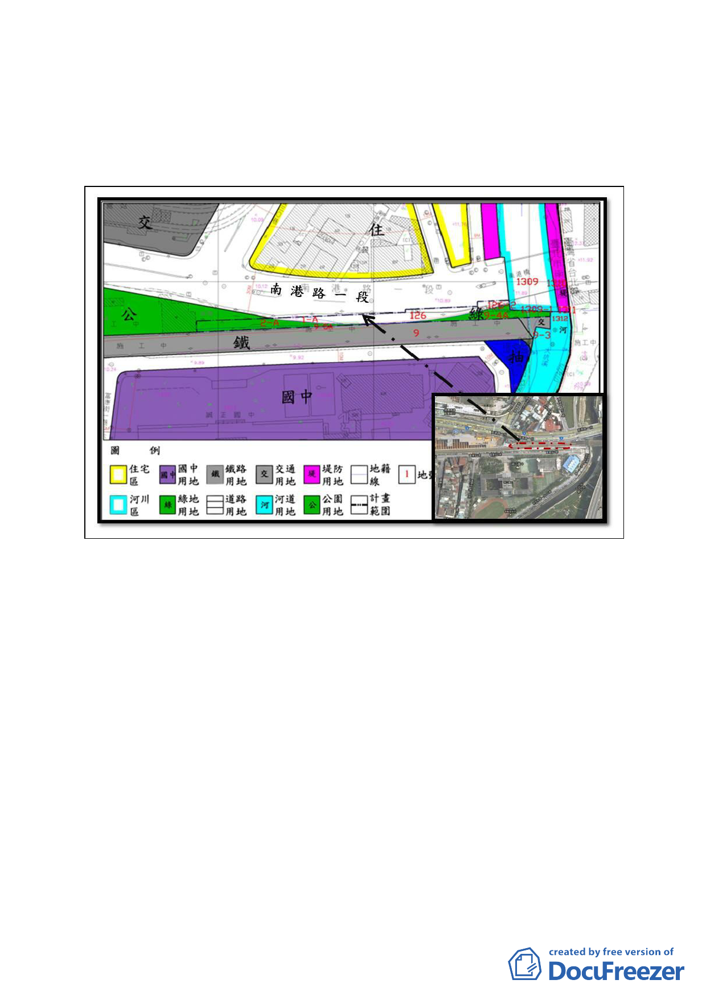

地號等6筆之公園用地、道路用地、綠地用地，面積為1,777
平方公尺。計畫範圍內之公園用地、綠地用地皆已開闢完成。
圖：計畫範圍示意圖
二、計畫緣起：
(一) 「臺鐵捷運化後續計畫--樟樹灣-南港間擴建三軌工程」
為「台鐵台北都會區捷運化暨區域鐵路後續計畫」之子計
畫，延伸「臺北市區鐵路地下化東延南港工程（簡稱南港
專案，100年已完工）」之工程項目，北二高橋下以北為高
架段，以南為地下段。
(二) 交通部臺灣鐵路管理局（簡稱臺鐵局）為推動前揭「臺鐵
都會區捷運化暨區域鐵路後續建設計畫」，擬於既有鐵路
用地北側之『部分道路、綠地、公園、交通用地、鐵路用
地、河道用地、堤防用地、河川區』等公共設施用地地下
-6-